Figure 32-14: The OCMC with the right-click context menu on OI.MBTCP.1 showing the Activate (Auto start after reboot) option. This will restart the Modbus PLC server and restore the connection. (page 11-21)
Source: AVEVA Application Server 2023 Training Manual, Module 11 — Introduction to QuickScript.NET, Section 2
Covers QuickScript.NET variables (DIM declarations, data types, arrays, null, quality propagation), control structures (IF/THEN, FOR/NEXT, FOR EACH, TRY/CATCH, WHILE), Lab 22 (Scripting Valve Status), and Lab 23 (Scripting Custom Alarms). (pages 11-22 to 11-50)
Reference: Lab 20 — Auto Reconnect for DDESuiteLinkClient, runtime verification (pages 11-18 to 11-22)
The following screenshots document the runtime verification steps for Lab 20, showing the script configuration, attribute setup, and Object Viewer monitoring used to confirm the reconnect and disconnect-monitoring scripts work correctly.
First, verify the Reconnect script is configured on the $gDDESuiteLinkClient object. The Scripts tab shows the Reconnect script entry.
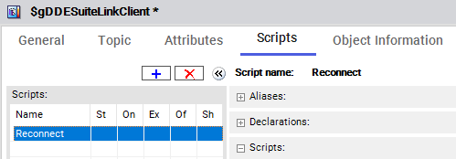
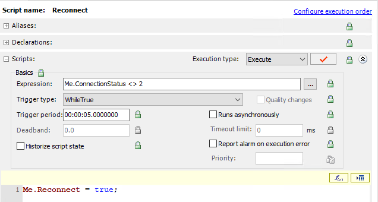
2, WhileTrue trigger, 5-second period, and script body Me.Reconnect = true">Me.ConnectionStatus <> 2, trigger type is WhileTrue with a 5-second trigger period, and the script body executes Me.Reconnect = true;. (page 11-18)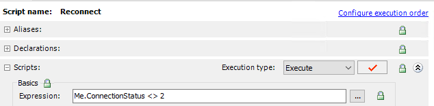
2 with padlock icons">Me.ConnectionStatus <> 2 triggers when the connection status is not equal to 2 (Connected). Padlock icons indicate inherited/locked properties. (page 11-18)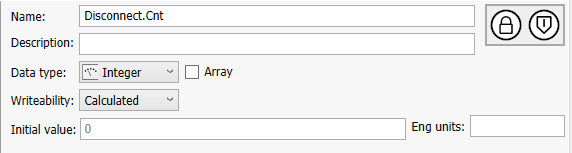
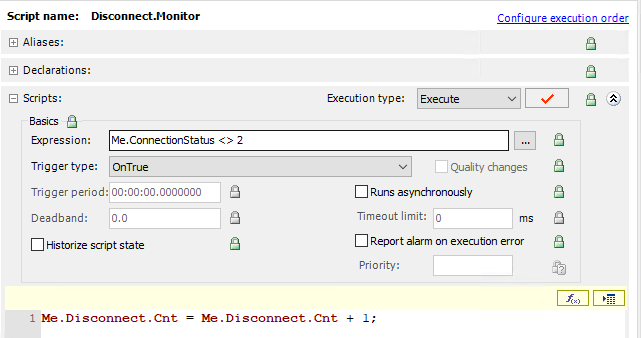
2, OnTrue trigger, and script body incrementing Disconnect.Cnt">Me.ConnectionStatus <> 2, trigger type is OnTrue (fires once when transitioning from false to true), and the script body is Me.Disconnect.Cnt = Me.Disconnect.Cnt + 1;. (page 11-19)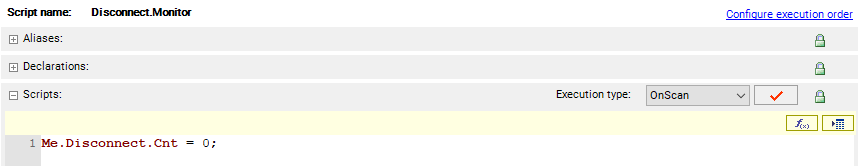
Me.Disconnect.Cnt = 0;. This resets the disconnect counter to zero every time the object goes on scan. (page 11-19)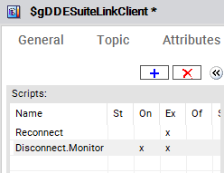
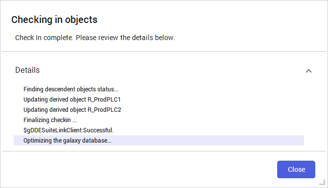
After deploying the scripts, use Object Viewer to verify the reconnect and disconnect monitoring functionality.
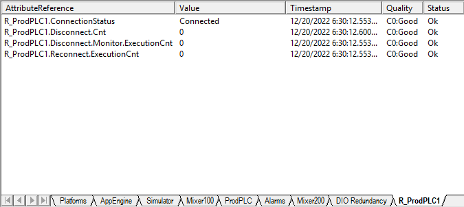
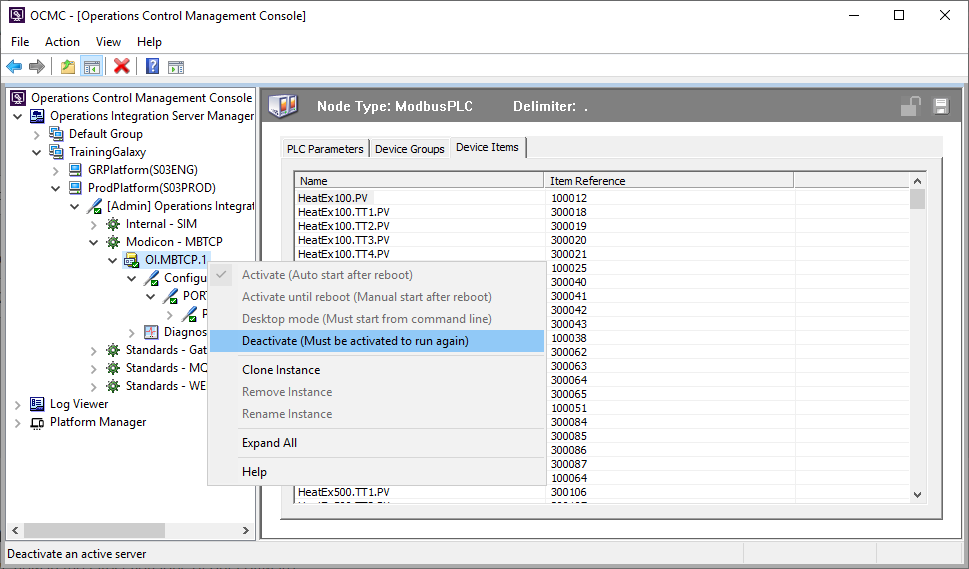
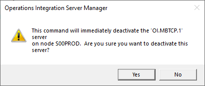
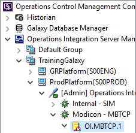
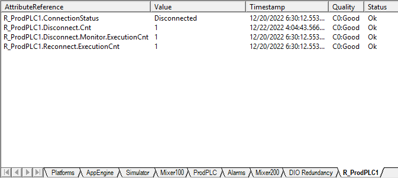
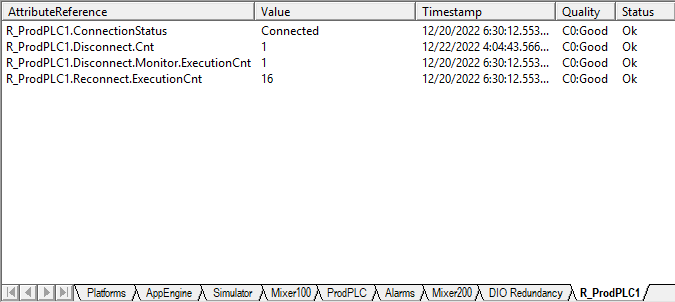
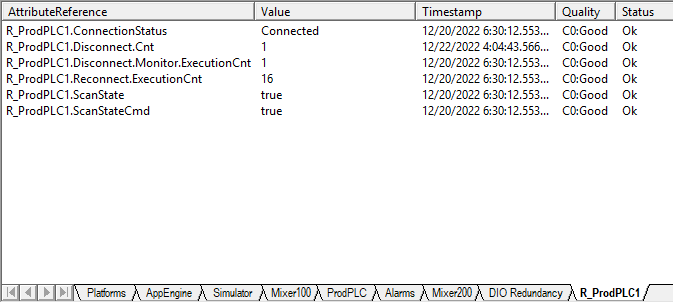
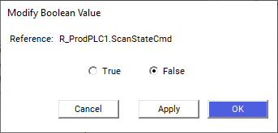
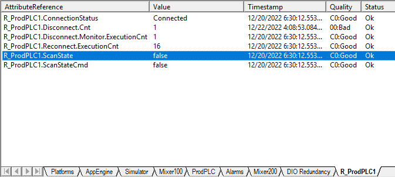
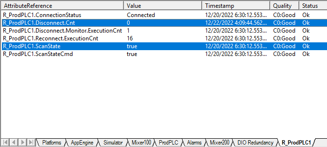
Reference: Lab 21 — Switching Back to Primary Redundant Engine (pages 11-22 to 11-24)
This section completes the final steps of Lab 21, where you configure a script to force failover back to the primary redundant engine when it becomes available.
Step 1: In the IDE, open the AppEngine1 configuration editor.
Step 2: On the Scripts tab, add a script and configure it as follows:
| Setting | Value |
|---|---|
| Name | RedundancyPrimaryActive |
| Execution type | Execute (default) |
| Expression | (Me.Redundancy.Identity == 2) AND (Me.Redundancy.PartnerStatus == 4) |
| Trigger type | OnTrue |
| Script body | Me.Redundancy.ForceFailoverCmd = true; |
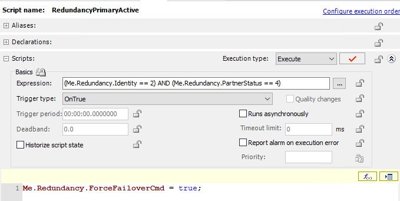
Me.Redundancy.Identity == 2 — Checks that this engine is the current active (primary) controllerMe.Redundancy.PartnerStatus == 4 — Checks that the partner/backup engine is unavailable or faultyMe.Redundancy.ForceFailoverCmd = true — Commands the system to failover to the designated primaryStep 3: Validate the script.
Step 4: Save, close, and check in the object with an appropriate comment. The change propagates to the backup engine.
Step 5: Deploy AppEngine1. Note that Include redundant partner is selected by default and cannot be unchecked.
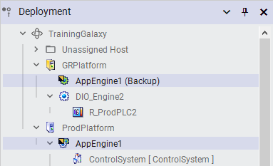
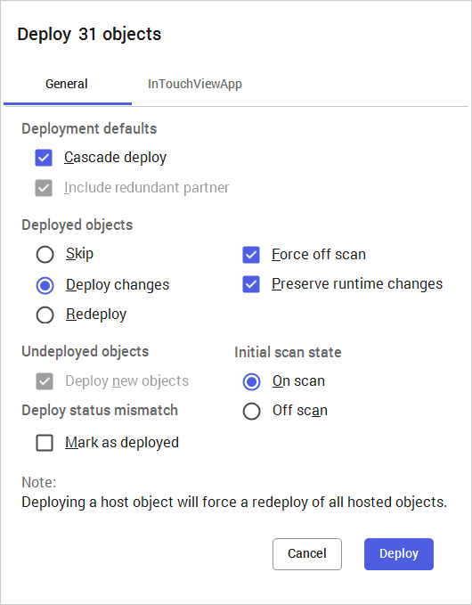
Step 6–7: In Object Viewer, apply the ForceFailover command to AppEngine1 and observe the engine returning to the Active computer.
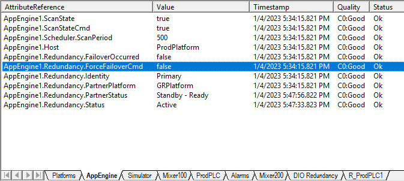
Source: AVEVA Application Server 2023 Training Manual, Module 11, Section 2
This section describes the usage of variables and control statements in a script. (pages 11-25 to 11-32)
Reference: QuickScript .NET Variables (pages 11-25 to 11-26)
Variables in QuickScript.NET must be declared before use. They can appear on both the left and right sides of statements and expressions.
Each variable must be declared with a separate DIM statement followed by a semicolon:
DIM <variable_name> [ ( <upper_bound>
[, <upper_bound> [, <upper_bound>]] ) ]
[ AS <data_type> ];| Element | Description |
|---|---|
DIM | Required keyword |
<variable_name> | Must begin with a letter (A–Z or a–z); remaining characters can be letters, digits (0–9), or underscores (_). Limited to 255 Unicode characters. Must not contain dots. |
<upper_bound> | A number between 1 and 2,147,483,647 for array dimensions. Up to 3 dimensions supported. Lower bound is always 1. |
AS | Optional keyword for declaring the data type. |
<data_type> | One of: Boolean, Integer, ElapsedTime, Float, Double, String, Time, or InternationalizedString. Also supports .NET types and imported script library types. |
AS clause, the variable defaults to Integer. For example:
DIM LocVar1;
' is equivalent to:
DIM LocVar1 AS Integer;' INVALID:
DIM LocVar1 AS Integer, LocVar2 AS Float;
DIM LocVar3, LocVar4, LocVar5 AS String;
' VALID:
DIM LocVar1 AS Integer;
DIM LocVar2 AS Float;
DIM LocVar3 AS String;Arrays are declared with dimensions in the DIM statement. The syntax for referencing an entire array is [ ]:
DIM locarr[10] AS Float;
' Assign attribute array to local array:
locarr[] = tag.attr[];The lower bound of each array dimension is always 1. After declaration, the upper bound is fixed — ReDim is not supported.
When used on the right side of an equation, declared local variables always cause the left side to have Good quality:
DIM x AS Integer;
DIM y AS Integer;
x = 5;
y = 5;
me.attr = 5; ' Quality: Good
me.attr = x; ' Quality: Good
me.attr = x + y; ' Quality: GoodUse null to indicate no object is currently assigned to a variable. This is equivalent to C#'s null or VB's Nothing. Assigning null makes the variable eligible for garbage collection.
null — doing so terminates the script with an error. However, you can test a variable for null:
IF myvar == null THEN ...It is not possible to pass attributes directly as parameters for system objects. Use a local variable as an intermediary, or explicitly convert the attribute to a string using an appropriate function call.
Reference: QuickScript .NET Control Structures (pages 11-27 to 11-32)
QuickScript.NET provides five primary control structures:
IF … THEN … ELSEIF … ELSE … ENDIFFOR … TO … STEP … NEXT LoopFOR EACH … IN … NEXTTRY … CATCHWHILE LoopReference: IF-THEN-ELSE-ENDIF (pages 11-27 to 11-28)
Conditionally executes various instructions based on the state of an expression:
IF <Boolean_expression> THEN;
[statements];
[ { ELSEIF;
[statements] } ];
[ ELSE;
[statements] ];
ENDIF;Depending on the data type, expressions are evaluated as True or False:
| Data Type | Mapping |
|---|---|
| Boolean | Directly used (no mapping needed) |
| Integer | Value == 0 → False; Value <> 0 → True |
| Float | Value == 0 → False; Value <> 0 → True |
| Double | Value == 0 → False; Value <> 0 → True |
| String | Cannot be mapped — results in validation error |
| Time | Cannot be mapped — results in validation error |
| ElapsedTime | Cannot be mapped — results in validation error |
| InternationalizedString | Cannot be mapped — results in validation error |
| BigString | Cannot be mapped — results in validation error |
IF value == 0 THEN
Message = "Value is zero";
ELSEIF value > 0 THEN;
Message = "Value is positive";
ELSEIF value < 0 THEN;
Message = "Value is negative";
ELSE;
{Default. Should never occur in this example};
ENDIF;You can nest IF statements, but each nesting requires an additional ENDIF:
IF <Boolean_expression> THEN;
[statements];
IF <Boolean_expression> THEN;
[statements];
ENDIF;
ENDIF;DIM temp AS Integer;
temp = me.Attribute1;
me.Attribute2 = temp;IsBad():
IF (IsBad(me.Attribute1)) THEN
LogMessage("Attribute1 quality is bad");
ELSE
IF me.Attribute1 <> me.Attribute2 THEN
me.Attribute2 = me.Attribute1;
ENDIF;
ENDIF;Reference: FOR-NEXT Loop (page 11-29)
Performs a function (or set of functions) multiple times during a single script execution:
FOR <analog_var> = <start_expression> TO <end_expression>
[STEP <change_expression>];
[statements];
[EXIT FOR;];
[statements];
NEXT;| Element | Description |
|---|---|
analog_var | A variable of type Integer, Float, or Double |
start_expression | Initial value for the loop variable |
end_expression | Termination condition — loop exits when analog_var exceeds this value (positive step) or falls below it (negative step) |
change_expression | Increment/decrement value (can be positive or negative). Defaults to +1 or −1 if STEP is omitted. |
analog_var is set to start_expressionanalog_var exceeds end_expression (positive step) or falls below it (negative step). If so, exit loop.EXIT FOR)analog_var is incremented by the step valueReference: FOR EACH Loop (page 11-30)
Used with collections exposed by OLE Automation servers:
FOR EACH <object_variable> IN <collection_object>
[statements];
[EXIT FOR;];
[statements];
NEXT;Where object_variable is a dimmed variable and collection_object is a variable holding a collection object. You can exit the loop with EXIT FOR.
Reference: TRY-CATCH (pages 11-30 to 11-31)
Provides error handling — allows scripts to continue running rather than terminating when errors occur:
TRY
[try statements] ' guarded section
CATCH
[catch statements]
ENDTRY;TRY. Put code that might fail in the try block.CATCH statement.ERROR variable, which is a .NET System.Exception object thrown from the Try block. You can call GetType() to determine the exception type.
DIM command = new System.Data.SqlClient.SqlCommand;
DIM reader AS System.Data.SqlClient.SqlDataReader;
command.Connection = new System.Data.SqlClient.SqlConnection;
TRY
command.Connection.ConnectionString = "Integrated Security=SSPI";
command.CommandText = "select * from sys.databases";
command.Connection.Open();
reader = command.ExecuteReader();
WHILE reader.Read()
me.name = reader.GetString(0);
LogMessage(me.name);
ENDWHILE;
CATCH
LogMessage(error);
ENDTRY;
IF reader <> null AND NOT reader.IsClosed THEN
reader.Close();
ENDIF;
IF command.Connection.State == System.Data.ConnectionState.Open THEN
command.Connection.Close();
ENDIF;Reference: WHILE Loop (pages 11-31 to 11-32)
Performs a function or set of functions repeatedly while a condition is true:
WHILE <Boolean_expression>
[statements]
[EXIT WHILE;]
[statements]
ENDWHILE;ENDWHILE.EXIT WHILE).Reference: Quality of Input, InputOutput, and Output Extensions (page 11-32)
Source: AVEVA Application Server 2023 Training Manual, Module 11 Lab 22
Hands-on lab covering array attributes, script-based valve state calculation, and the use of DIM declarations. (pages 11-33 to 11-42)
Reference: Lab 22 Introduction (page 11-33)
In this lab, you will add a script to the $Valve template to report all stages of the valve: Open, Closed, and Traveling. You will create an attribute with an Array value that holds the list of possible states, and an integer value for the current valve state.
Reference: Add Support Attributes (pages 11-34 to 11-35)
First, modify the Limit Switch Open (LSOpen) to add a "Not Open" option. Then add attributes for the Limit Switch Closed (LSClosed), the calculated valve state (PV), an array of possible states (PVStates), and the valve state index (PVState).
Step 1: In the IDE, Templates tab, Training\Project toolset, open the $Valve configuration editor.
Step 2: In the Attributes list, select LSOpen and modify the configuration:
| Setting | Value |
|---|---|
| 'False' label | Not Open and locked (default) |
Step 3: With LSOpen selected, click the Duplicate button and configure the new attribute:
| Setting | Value |
|---|---|
| Name | LSClosed |
| Description | Limit Switch Closed and locked |
| 'False' label | Not Closed and locked |
| 'True' label | Closed and locked |
| I/O | Read (default) |
Step 4: Add a new attribute for the calculated valve state:
| Setting | Value |
|---|---|
| Name | PV |
| Data type | String |
| Writeability | Calculated |
Step 5: Add an array attribute to hold the valve states:
| Setting | Value |
|---|---|
| Name | PVStates |
| Data type | String |
| Array | Checked |
| Array size | 3 |
| Writeability | Read/Write |
Step 6: Add an integer attribute for the valve state index:
| Setting | Value |
|---|---|
| Name | PVState |
| Data type | Integer |
| Writeability | Calculated |
Reference: Create and Configure a Script (pages 11-36 to 11-37)
Step 7: On the Scripts tab, add a new script named Valve.State.Calculate.
Step 8: Configure the script with these settings:
| Setting | Value |
|---|---|
| Execution type | Execute (default) and locked |
| Expression | Me.LSOpen OR Me.LSClosed |
| Trigger type | Data Change |
Step 9: In the script body, enter the following:
' Determine valve state based on limit switches
IF (Me.LSOpen AND NOT Me.LSClosed) THEN
Me.PVState = 1;
ELSEIF (NOT Me.LSOpen AND Me.LSClosed) THEN
Me.PVState = 2;
ELSE
Me.PVState = 3;
ENDIF;
' Set the PV string from the PVStates array
Me.PV = Me.PVStates[Me.PVState];Step 10: Validate the script.
Step 11: Save, close, and check in the object with an appropriate comment.
Reference: Set Array Values (pages 11-38 to 11-39)
Step 12: Open the $Valve configuration editor and select the PVStates attribute.
Step 13: Set the array values:
| Index | Value |
|---|---|
| PVStates[1] | Open |
| PVStates[2] | Closed |
| PVStates[3] | Traveling |
Step 14: Save, close, and check in the object.
Step 15: Deploy the valve instances (InletValve_001, InletValve_002, OutletValve_001, OutletValve_002).
Reference: Test in Runtime (pages 11-40 to 11-42)
Step 16: In the Deployment view, open InletValve_001 in Object Viewer.
Step 17: Create a new watch window named ValveState and add the following attributes:
LSOpenLSClosedPVPVStatePVStates[]Step 18: Save the watch list.
Step 19: Test the valve states:
LSOpen to True and LSClosed to False → PV should show "Open", PVState should be 1LSOpen to False and LSClosed to True → PV should show "Closed", PVState should be 2PVStates) together with control structures (IF/THEN/ELSEIF/ELSE) to create a flexible, maintainable state-tracking script. The array makes it easy to update state names without changing the script logic.
Source: AVEVA Application Server 2023 Training Manual, Module 11 Lab 23
Hands-on lab covering custom alarm attributes, script-based alarm condition monitoring, and IF/THEN control logic. (pages 11-43 to 11-50)
Reference: Lab 23 Introduction (page 11-43)
In this lab, you will configure two new attributes with alarm features to monitor the flow to the transfer pumps within the $Mixer template. You will add a script to monitor the inlet valves and transfer pumps to ensure they are operating correctly, and trigger an alarm if they are not.
Reference: Create and Configure Attributes (pages 11-44 to 11-45)
Step 1: In the IDE, Templates tab, Training\Project toolset, open the $Mixer configuration editor.
Step 2: Create and configure a new attribute:
| Setting | Value |
|---|---|
| Name | Flow.Alarm.Pump1 |
| Description | Transfer Pump 1 - Faulty Flow Condition and locked |
| Data type | Boolean (default) |
| Writeability | Calculated |
| State alarm | Checked and locked |
| Category | Process |
| Priority | 500 (default) |
| Active alarm state | True (default) |
Step 3: Duplicate Flow.Alarm.Pump1 and change the Description to "Transfer Pump 2 - Faulty Flow Condition" and lock it. The new attribute will be named Flow.Alarm.Pump2.
Reference: Add a Script to Calculate Alarm Conditions (pages 11-46 to 11-47)
Step 4: On the Scripts tab, add a new script named Flow.Alarm.Condition.
Step 5: Configure the script:
| Setting | Value |
|---|---|
| Execution type | Execute (default) and locked |
| Expression | Me.Inlet1.StateIndex == 1 or Me.Inlet2.StateIndex == 1 or Me.Pump1.PV or Me.Pump2.PV |
| Trigger type | While True (default) |
Step 6: In the script body, enter the following:
' Triggers Alarm State if Inlet1 is Closed and Pump is on
IF (Me.Inlet1.StateIndex == 1 AND Me.Pump1.PV) THEN
Me.Flow.Alarm.Pump1 = true;
ELSE
Me.Flow.Alarm.Pump1 = false;
ENDIF;
' Triggers Alarm State if Inlet2 is Closed and Pump is on
IF (Me.Inlet2.StateIndex == 1 AND Me.Pump2.PV) THEN
Me.Flow.Alarm.Pump2 = true;
ELSE
Me.Flow.Alarm.Pump2 = false;
ENDIF;Flow.Alarm.Pump1 set to True (alarm activates)Flow.Alarm.Pump2 set to True (alarm activates)Step 7: Validate the script.
Step 8: In the Execution type drop-down list, select OnScan.
Step 9: In the script body, enter:
' Initialize alarm states as false
Me.Flow.Alarm.Pump1 = false;
Me.Flow.Alarm.Pump2 = false;Step 10: Validate the script. Notice the Flow.Alarm.Condition script now has both OnScan and Execute scripts.
Step 11: Save, close, and check in the object with an appropriate comment. The change propagates to derived objects.
Step 12: Deploy Mixer100 and Mixer200.
Reference: Test in Runtime (pages 11-49 to 11-50)
Step 13: In the Deployment view, open Mixer100 in Object Viewer.
Step 14: Create a new watch window named CustomAlarms and add the following attributes:
Inlet1_001.StatusPump1_001.CMDPump1_001.PV.MsgMixer100.Flow.Alarm.Pump1Mixer100.Flow.Alarm.Pump1.InAlarmInlet2_001.StatusPump2_001.CMDPump2_001.PV.MsgMixer100.Flow.Alarm.Pump2Mixer100.Flow.Alarm.Pump2.InAlarmStep 15: Save the watch list.
Step 16: Trigger an alarm condition:
Inlet1_001.Status is Closed, set Pump1_001.CMD to True → Observe Flow.Alarm.Pump1 becomes True and InAlarm becomes TrueStep 17: Clear the alarm:
Pump1_001.CMD to False → Observe the alarm clearsStep 18: Repeat the test for Inlet2 and Pump2.
Step 19: Minimize Object Viewer.
DIM before use; each variable needs its own DIM statementIsBad() before comparisonsAS clause in a DIM statement?EXIT FOR statement in a FOR/NEXT loop?EXIT FOR allows you to exit the loop early from within the loop body, jumping to the statement immediately after NEXT.